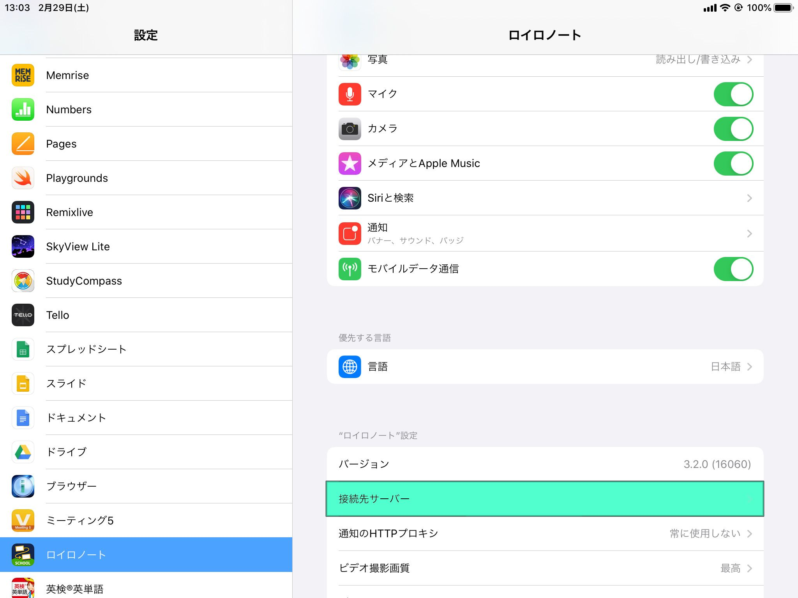
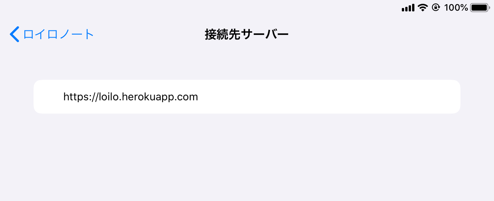

設定方法
警告: この手順を実施した場合、アプリの仕様によりログアウトされます。ユーザ名とパスワードが分からない場合は実施しないでください。
- 「設定」アプリを開き、ロイロノート > 接続先サーバー に移動する
 - 設定されている値を「https://n.loilo.tv/」から「https://loilo.herokuapp.com/」に変更する
 - アプリを開きログインする
Fork me on GitLab
このプロキシソフトを利用することで、ロイロノート・スクールの「Webカード」機能を使い、制限のない自由なインターネットにアクセスできます。
警告: この手順を実施した場合、アプリの仕様によりログアウトされます。ユーザ名とパスワードが分からない場合は実施しないでください。